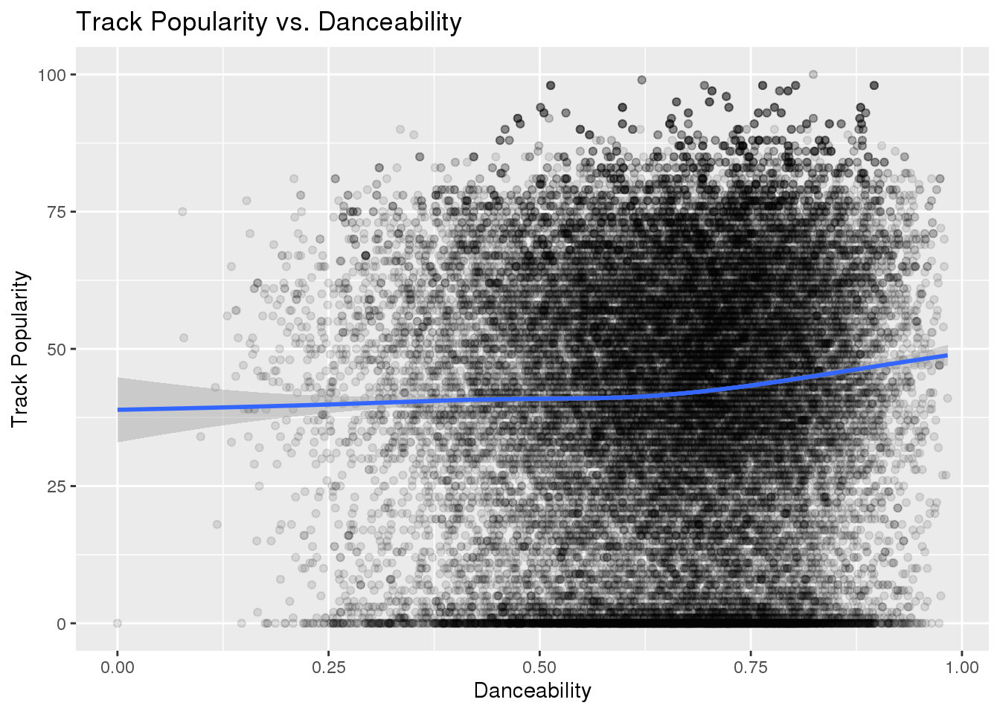

Spotify Songs
This data set comes from the spotify_songs.csv file on the Tidy Tuesday website. The data consists of 32,833 observations of 23 variables. The variables track_id, track_album_id, and playlist_id are all unique IDs for the track, album, and playlist, respectively. The variables track_name, track_artist, track_album_id, track_album_name, and track_album_release_date are all variables that give details on the track to help with identification. The variables playlist_name, playlist_genre, and playlist_subgenre give information on what type of track it is, in other words what type of playlists it is on. The variables, danceability, energy, key, loudness, mode, speechiness, acousticness, instrumentalness, liveness, valence, and tempo describe different characteristics of the track using a numeric scale. The last variable duration_ms gives the duration of the track in milliseconds.
- Question 2: The valence of the track determines if it sounds happy or sad, does the valence change throughout the seasons of the year?
- I will explore this by plotting the valence of a song vs. the release date of a song using a line plot to see if there is a difference in the numerical value of valence across the year. For instance, is valence higher (indicating a happier song) during summer months as opposed to songs released in the winter.
- Question 3: What is the distribution of speechiness?
- I will explore this by creating a histogram of the speechiness value (indicates if a song is almost all words or mostly music) and how the distribution changes when it is broken down into other variables.
- Question 4: Does the duration of a track impact the popularity?
- I will explore this by plotting the duration of the song against the popularity of the track variable to determine what legnth of track is ideal to give the highest possible popularity.
- Question 1: Is there a positive correlation between the danceability and the popularity of the track?

The graphs above show that overall, the danceability does not have much of an impact on the popularity of a track, unless the danceability indicator is 0.75 or above, and then danceability does have a positive impact on the track popularity. However, as seen in the second graphic, danceability has a greater impact on popularity depending on the genre of the playlist the track appears on. R&B and Rock tracks show similar patterns to that of the overall effect of danceability on popularity. While, EDM and Latin playlist generes show a decrease in track popularity as the danceability increases. For Pop and Rap however, a consistent increase is seen in popularity as the dacneaility increases.